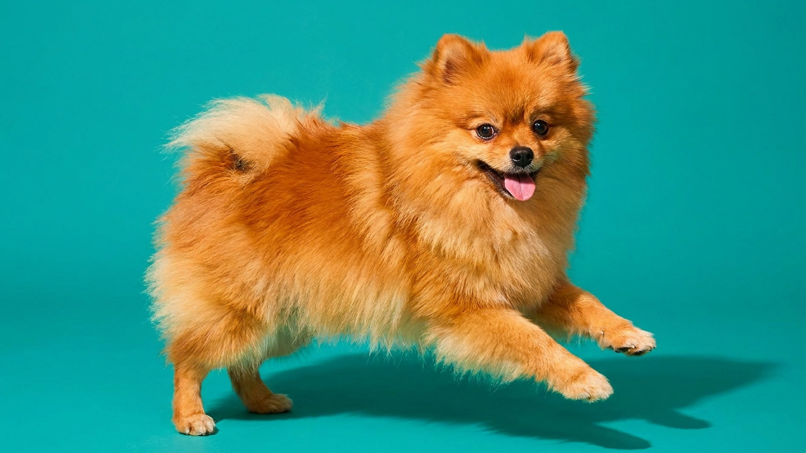

Каждое лето в груминг-салонах слышат одно и то же: «Побрейте шпица покороче, ему же жарко». Казалось бы, логично. Но у померанского шпица двойная шерсть работает ровно наоборот: она защищает от перегрева, а не усиливает его. Стрижка под ноль может навсегда изменить структуру покрова — шерсть отрастёт пятнами или не отрастёт вовсе. Ниже — что происходит с шёрстным покровом после бритья и как ухаживать за шпицем летом без вреда.
🐾 Спросите AI-ветеринара прямо сейчас
AnimaLife — приложение, где AI-ветеринар отвечает на вопросы о кошке или собаке 24/7. Бесплатно, без записи и очередей.
У померанского шпица два слоя: плотный мягкий подшёрсток и жёсткий остевой волос сверху. Вместе они создают воздушную прослойку, которая работает в обе стороны — удерживает тепло зимой и отражает солнечный жар летом. Кожа под шерстью остаётся в тени, не перегревается и не получает ультрафиолет напрямую.
Когда шерсть сбривают, кожа остаётся незащищённой. Солнце греет её напрямую, терморегуляция нарушается — и собаке становится жарче, а не прохладнее. Это противоположно цели, ради которой хозяева приходят в салон.
У пород с густым двойным покровом — шпицев, хаски, самоедов — существует феномен, который ветеринарные дерматологи называют «alopecia X» (ещё известен как «post-clipping alopecia»). После глубокой стрижки фолликулы могут войти в спящую фазу и не запустить новый цикл роста вовремя.
Внешне это выглядит так: шерсть отрастает неравномерно, пятнами разной длины и текстуры. В части случаев остевой волос не восстанавливается вовсе, и собака остаётся с мягким пухом вместо привычной пышной шубы. Точную причину феномена наука пока не установила, но закономерность устойчивая: у стриженных шпицев она встречается значительно чаще, чем у тех, кому делали только гигиеническую обработку.
Правильный летний уход — это не убрать шерсть, а убрать то, что мешает ей работать. Несколько практических шагов:
Грумер нужен регулярно — но не для того, чтобы сбривать шерсть под ноль. Задачи специалиста: расчесать и обработать подшёрсток, сделать гигиеническую стрижку, проверить уши и когти. Хороший грумер никогда не предложит брить шпица без медицинского показания — и если предлагает, это повод найти другого мастера.
Если шерсть уже повреждена после предыдущей стрижки и отрастает пятнами — покажите собаку ветеринарному дерматологу: он оценит состояние кожи и фолликулов и подберёт уход.
🐾 Дневник здоровья питомца — в кармане
Вес, прививки, симптомы и напоминания в одном приложении. AnimaLife следит за здоровьем питомца вместо вас.
🐾 Понравился разбор?
Подпишитесь на канал — каждый день разбираем по одному тревожному симптому у кошек и собак: что в пределах нормы, а когда пора к врачу. Подпишитесь, чтобы не пропустить разбор, который может спасти здоровье вашего питомца.